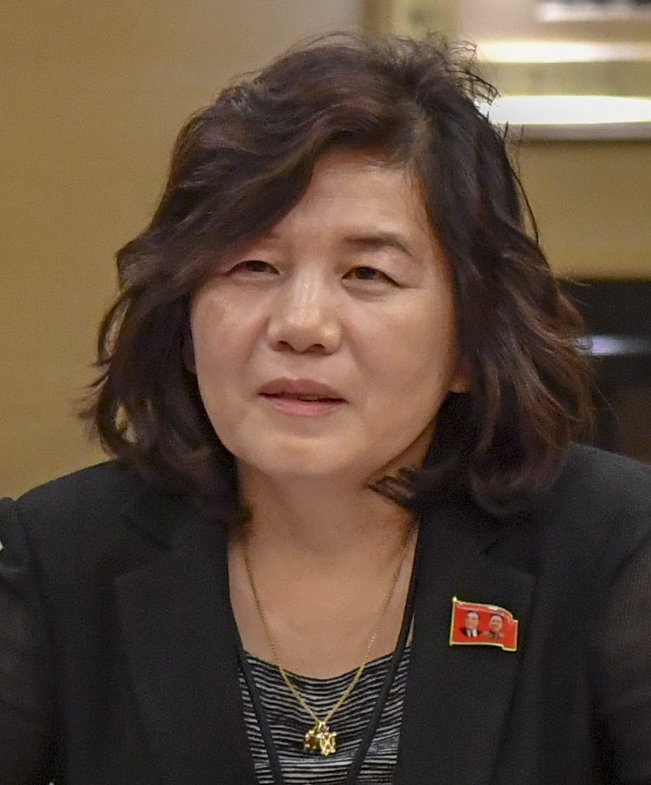

북한 최선희, 러시아 방문… 김정은 방러 조율 관측
북한 최선희 외무상이 러시아를 방문했다. 김정은 국무위원장의 방러 가능성을 조율하기 위한 행보라는 관측이 나오면서, 북·러 밀착 흐름이 다시 주목받고 있다.
정가호 기자 · 2026.07.24
橋국제

북한 최선희 외무상이 러시아를 방문했다고 외신들이 전했다. 김정은 위원장의 러시아 방문을 사전 조율하려는 것일 수 있다는 해석이 제기된다.
광고 문의 · 300×250최근 북한과 러시아는 정상 간 교류와 협력을 확대해 왔다. 외무상급의 방문은 정상 방문의 의제와 일정, 협력 분야를 사전에 조율하는 통상적 외교 절차로 볼 수 있다.
북·러 밀착은 동북아시아의 안보 지형에 영향을 주는 사안으로 국제사회가 주시한다. 협력의 내용과 범위에 따라 주변국의 대응과 역내 균형이 달라질 수 있다.
다만 방문의 구체적 성과나 정상회담 성사 여부는 아직 확정되지 않았다. 외교적 신호를 과대·과소 해석하기보다 후속 발표를 지켜볼 필요가 있다.
華橋時報는 외교 사안을 특정 진영의 시각이 아니라 사실과 맥락으로 전한다. 한반도 주변의 외교 흐름은 재한 화인 공동체를 포함한 역내 주민의 삶과도 무관하지 않다.
출처·참고 (사실 확인용 — 본문은 직접 재작성)
· 로이터
· 로이터